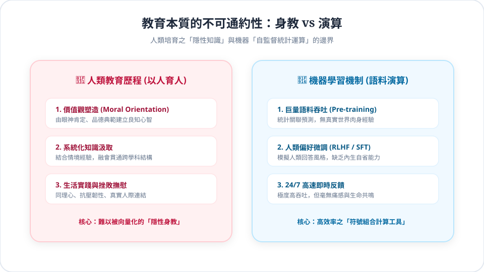

QUADRANT 01 • 底層技術盲區
QUADRANT 02 • 學習者認知衝擊
QUADRANT 03 • 教育本質不可符號化
QUADRANT 04 • 體制治理與公平邊界
🌸 TECH-01 • 底層缺陷
點擊聚焦 🔍
機器幻覺與偽知識擴散
模型具備「語法無懈可擊，但內容憑空捏造」的特質。基礎教育學生缺乏交叉查證能力，極易將偽事實固化為先入為主的錯誤心智模型。

防禦解方：導入權威校本教材 RAG（檢索增強生成），杜絕無約束自由生成。
🌸 TECH-02 • 數理推論實證
點擊聚焦 🔍
二十步推理斷崖 (The 20-Step Cliff)

自回歸解碼中單步偏差引發骨牌式錯誤累積；短程推論保持 95% 高準度，但延伸至 20 步以上時驟降至 36%，傳統結果監督（ORM）容易「歪打正著」。
🍂 PSYC-01 • 學習心理危機
點擊聚焦 🔍
認知外包與假性理解
89% 學生曾使用 AI 完成作業。直接投餵答案跳過了「卡住 $\to$ 思索 $\to$ 突破」的突觸重塑挫折期，產生看懂答案便誤認自己精通的「假性理解」。

🍂 PSYC-02 • 提示詞工程防線
點擊聚焦 🔍
蘇格拉底式防爆雷機制
No-Spoilers Rule：嚴格禁止系統直接貼出最終解答。透過多輪反問與階梯式提示，強制引導學生輸出自身假設，AI 僅扮演思維鷹架（Scaffolding）。

「你覺得題目中第二個條件和我們先前學過的質量守恆有什麼關聯？」—— 模擬 Khanmigo 啟發式教學。
🌊 PHIL-01 • 育人哲學邊界
點擊聚焦 🔍
教育本質的不可符號化
人類養育以「價值觀 $\to$ 知識 $\to$ 實踐」為序，重在隱性身教；機器學習則是以「語料 $\to$ 統計關聯 $\to$ RLHF」為本。眼神鼓勵與挫敗共情無法被向量矩陣形式化。

🌊 PHIL-02 • 人本協同治理
點擊聚焦 🔍
教師雙軌角色的重構
破解「AI 取代教師」的虛妄焦慮：AI 接管 24/7 低階作業批改與重複性釋疑；教師解放寶貴心力，升級為點燃學習熱情與人生導向的 Mentor。

不是 AI 取代教師，而是善用 AI 的教師將重新定義卓越教學。
🎋 GOV-01 • 制度與公平
點擊聚焦 🔍
數位鴻溝、隱私與評量重構

付費算力門檻拉大二次階級鴻溝；未成年人數據去識別化紅線；傳統作業代寫失真倒逼評量轉向課堂即席探究與口試答辯。
💎 BREAKTHROUGH • 終極技術破局
核心中樞 🌟
可靠智慧導師的技術三角 (The Triad)
$$\text{Reliable ITS} = \text{CoT (思維展開)} + \text{PRM (步驟診斷)} + \text{Tool (確定性運算)}$$

CoT
思維透明展開
思維透明展開
PRM
步驟級邏輯診斷
步驟級邏輯診斷
Toolformer
外部確定性計算
外部確定性計算